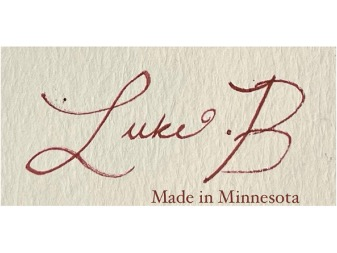
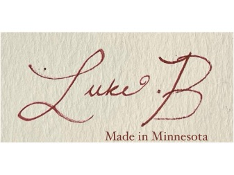

Luke Brawthen learned to sew at the age of 15 thanks to his teachings from his grandma Mary. It quickly became his primary form of self-expression and his favorite form of art. Those basic skills from the beginning stages have now transcended into his first clothing line, Cortland. Luke has a deep love for nature and preserving the earth, so when creating his garments, it is his personal standard to prioritize environmentalism and sustainability. In fact, this is why his entire collection is made of dead stock fabric, which means all fabric used is at the very "end" of its life cycle. Upon graduation, Luke intends to create his own clothing brand where he can keep evolving his designs and building his empire.
Much of the designer’s inspiration is rooted in childhood memories spent at a grandparent’s apple orchard. Among the many apple varieties, the Cortland held a special place, not for its taste, but for its striking appearance. After being picked, the apples would be coated in a dull film, a natural shield against the sun’s harsh rays. But once polished, they revealed brilliant red skin and crisp, bright white flesh beneath. That quiet transformation, from something ordinary into something eye catching, echoes the designer’s creative philosophy. Just like those apples, the garments in this collection began as overlooked scraps. But with care, imagination, and intention, they have been polished into something beautiful.